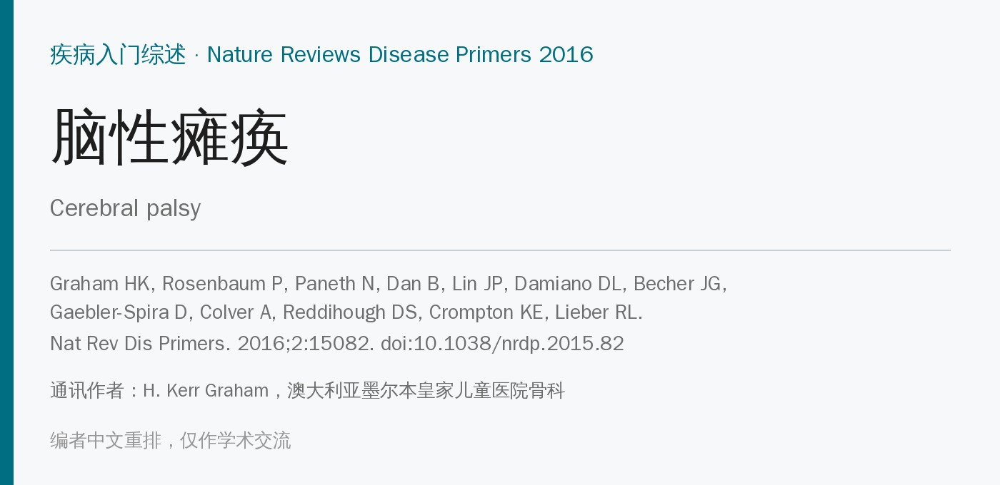
🔖原文信息（编者中文重排）
📚 文献信息
▪ Graham HK, Rosenbaum P, Paneth N, Dan B, Lin JP, Damiano DL, Becher JG, Gaebler-Spira D, Colver A, Reddihough DS, Crompton KE, Lieber RL. Cerebral palsy. Nat Rev Dis Primers. 2016;2:15082. doi:10.1038/nrdp.2015.82
▪ 中文题目：脑性瘫痪
▪ 通讯作者：H. Kerr Graham，澳大利亚墨尔本皇家儿童医院骨科；作者来自澳大利亚、加拿大、美国、比利时、英国和荷兰的 12 个团队
▪ 文章类型：Nature Reviews Disease Primers 疾病入门综述（2016 年 1 月 7 日在线发表，1 月 28 日更正）
脑瘫不是传统意义上的单一疾病，而是一组发育特征相同、严重程度各异的临床情况。国际专家组在 2000 年代中期给出的正式定义是：脑瘫是一组永久性的运动和姿势发育障碍，导致活动受限，归因于发育中的胎儿或婴儿脑内发生的非进展性损害；运动障碍常伴有感觉、知觉、认知、交流和行为障碍，以及癫痫和继发性肌肉骨骼问题。
• 最常见：在多数国家是儿童期起病、终身存在的肢体残疾中最常见的一种，约每 500 名新生儿 1 例，全球约 1700 万人
• 几乎都能活到成年：即使功能最差的患者，生存率过去几十年也明显提高，但仍低于同龄人
• 研究偏向儿童：多数研究和管理集中在儿童，成年后的生活轨迹是 21 世纪最紧迫的问题之一
• 资源匮乏地区更难满足脑瘫患者的需求
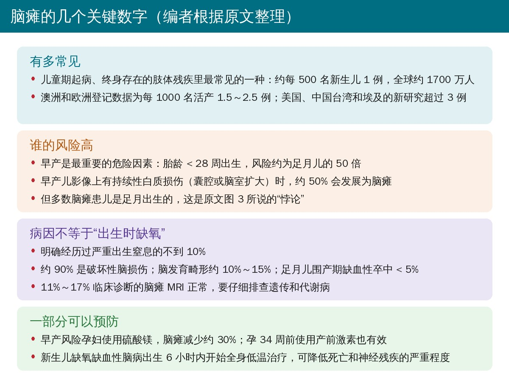
🔖编者根据原文整理
• GMFCS（粗大运动功能分级系统）是运动功能分级的金标准，分 I～V 级，不同年龄段有不同描述（图 1）
• 部位分型：单瘫、偏瘫属单侧脑瘫；双瘫、三肢瘫、四肢瘫属双侧脑瘫（图 2）
• 运动障碍类型：痉挛型最常见；运动障碍型（肌张力障碍、舞蹈手足徐动）占 6%～14%；共济失调型最少见，有时提示小脑畸形
• 痉挛型双瘫多伴脑室周围白质损伤，与早产和足月胎儿生长受限都有关；足月儿痉挛型四肢瘫合并运动障碍与严重出生窒息有关；核黄疸多导致运动障碍型伴感音神经性聋
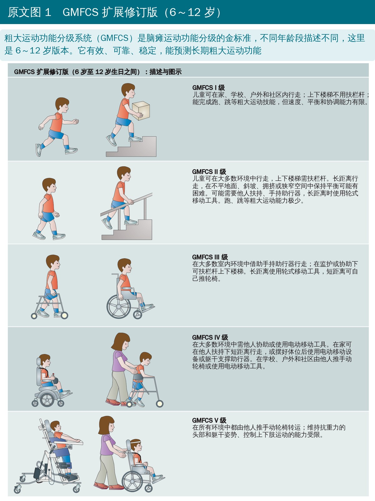
🔖原文图 1（编者把图中英文译成中文）
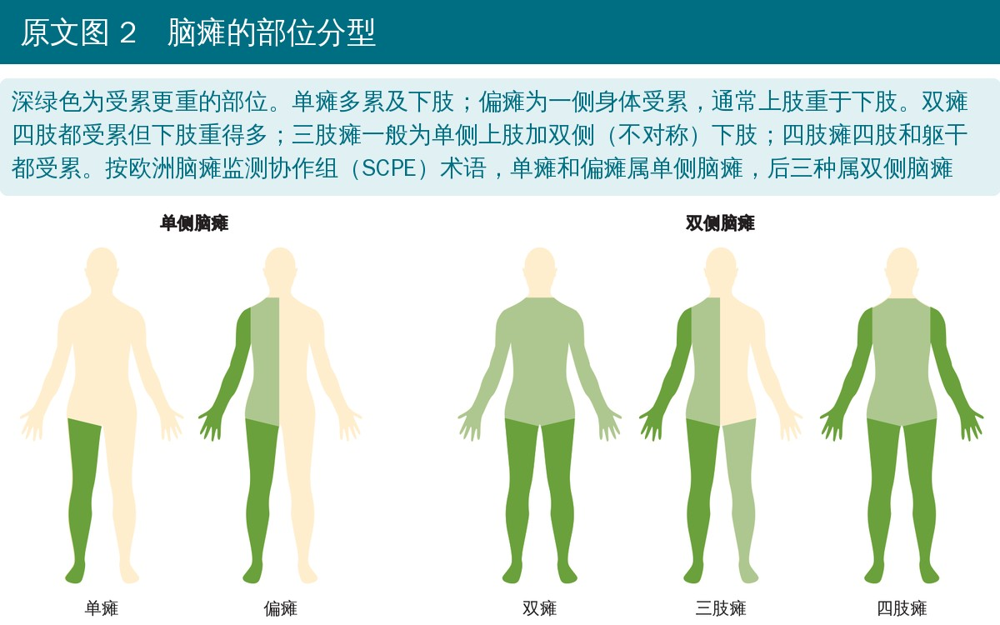
🔖原文图 2（编者把图中英文译成中文）
• 澳洲和欧洲的人群登记显示患病率为每 1000 名活产 1.5～2.5 例；美国、中国台湾和埃及的新研究为 3 例以上
• 20 世纪最后 25 年，极早产儿存活增多使发达国家的患病率略有上升，现在已趋于平稳
• 早产是最重要的危险因素：胎龄越小风险越高，38 周就能看到轻度升高；< 28 周出生的风险约为足月儿的 50 倍
• 早产儿中最重要的危险因素是影像上的白质损伤，持续性损伤（囊腔或脑室扩大）者约 50% 发展为脑瘫；绒毛膜羊膜炎、一过性低甲状腺素血症、机械通气时低碳酸血症也有关联
• “悖论”：早产风险极高，但多数患儿是足月出生的（图 3）
• 出生窒息被过度归因：明确经历严重出生窒息的不到 10%；约 10%～15% 有脑发育畸形；足月儿围产期缺血性卒中 < 5%，多表现为偏瘫
• 低收入和中等收入国家：Durkin 综述的 7 项人群研究中，4 项患病率更高（每 1000 例 4.4～10 例）；碘缺乏和新生儿黄疸仍是重要原因
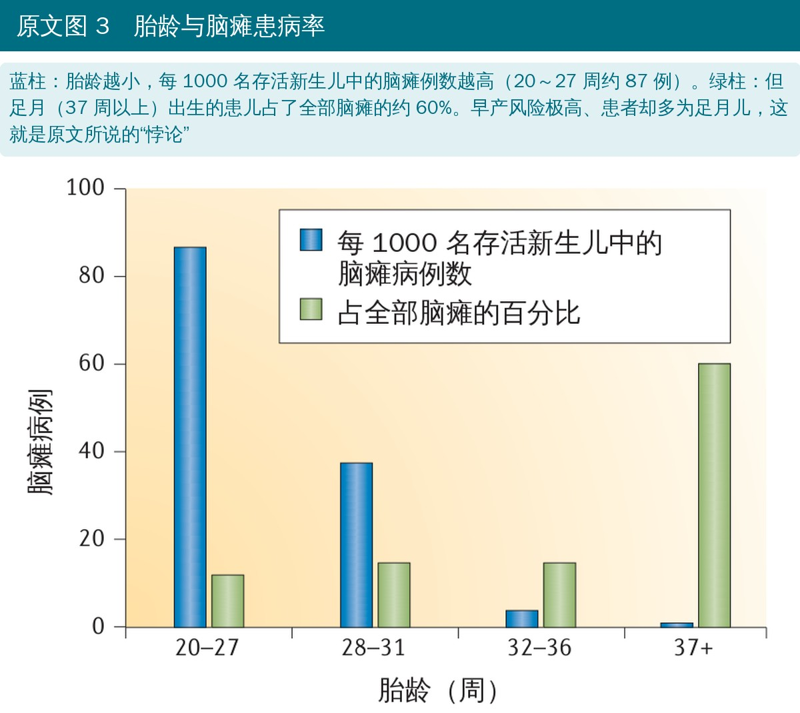
🔖原文图 3（编者把图中英文译成中文）
• 约 90% 是损伤原本健康脑组织的破坏性病变，而不是发育异常（图 4）
• 损伤部位取决于发生时的脑成熟度：早产儿以脑室周围白质软化为典型，足月儿主要累及大脑皮质、基底节和丘脑
• 缺氧缺血、兴奋性毒性、氧化应激和炎症共同导致神经元和胶质细胞坏死或凋亡（图 5）；这也是硫酸镁（阻断 NMDA 受体）、低温治疗等神经保护策略的基础
• 皮质-纹状体-丘脑-皮质和皮质-小脑-皮质环路受损影响运动计划、协调和运动学习；运动经验受限又进一步妨碍发育中的可塑性
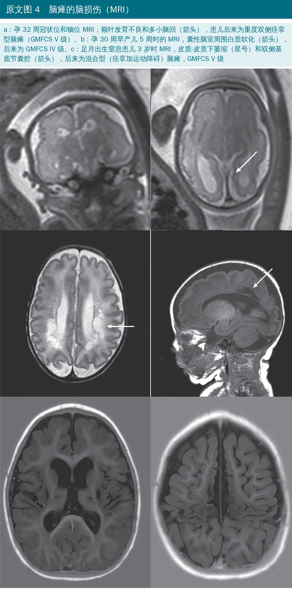
🔖原文图 4
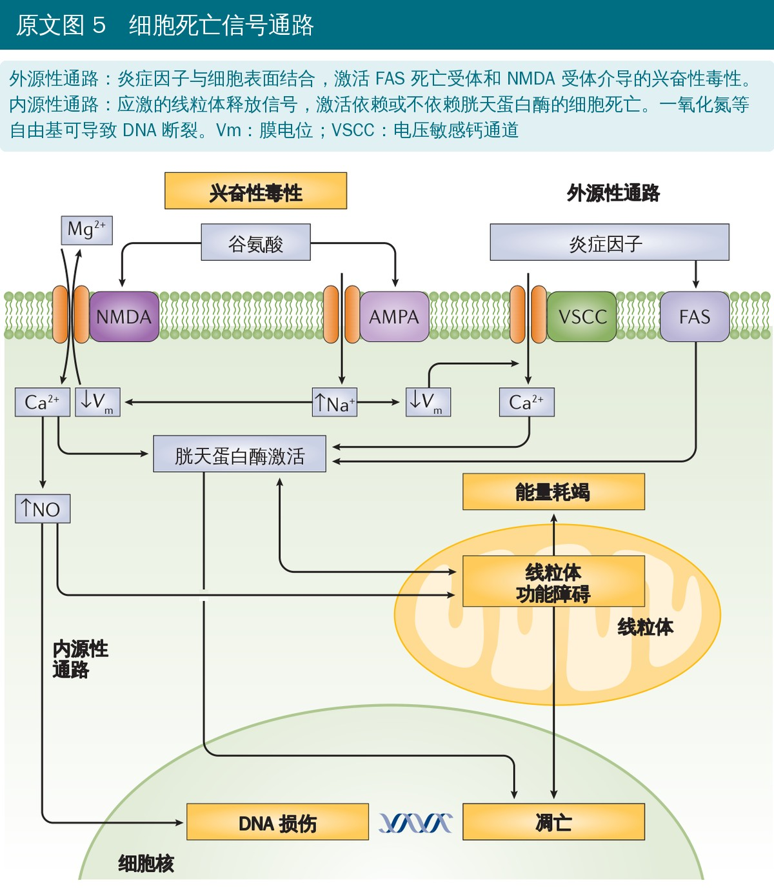
🔖原文图 5（编者把图中英文译成中文）
• 肌肉更短更小，肌纤维直径减小，力量产生面积变小，这部分解释了无力
• 最惊人的变化：固定挛缩肌肉的肌节长度几乎是正常的 2 倍、数量更少，被拉得很长的肌节产生的主动力低、被动张力高
• 最一致的力学改变是细胞外基质增生，肌肉变硬；但胶原含量和硬度的相关性并不好
• 流式细胞分选显示挛缩肌肉的卫星细胞（肌干细胞）减少约 70%，可能是“骨长肌不长”的原因之一（图 6）
• 转录组：脑瘫肌肉表达发育型肌球蛋白重链（更“幼稚”），小清蛋白显著升高，提示长期钙负荷增加
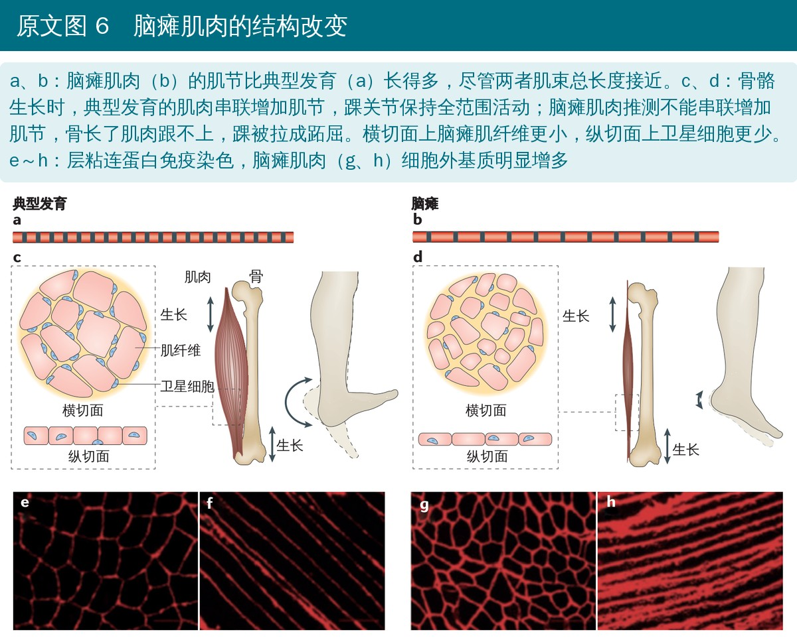
🔖原文图 6（编者把图中英文译成中文）
• 先分清是哪一种：睡眠时消失的是肌张力障碍；不受睡眠影响、速度依赖的牵张反射亢进才是痉挛（Lance 定义）（图 7）
• 肌张力障碍常被低估：11%～17% 的脑瘫 MRI 正常，运动障碍型中可达 50%；脑室周围白质软化不等于痉挛
• 279 名转诊做脑深部电刺激的肌张力障碍儿童中，60% 在转诊时仍在加重；70 项干预研究大多没有测量儿童最在意的疼痛、日常生活、手功能和坐姿
• 降痉挛不等于改善功能：口服巴氯芬能降低速度依赖的牵张反射，但不一定带来功能进步
• 痉挛不是尖足的原因：原文明确说，典型的尖足（足尖走路）姿势并非痉挛所致
• 无力比痉挛更致残：上运动神经元综合征的“阴性”特征（无力、选择性运动控制差）影响更大，过去过分强调了“阳性”特征（图 9）
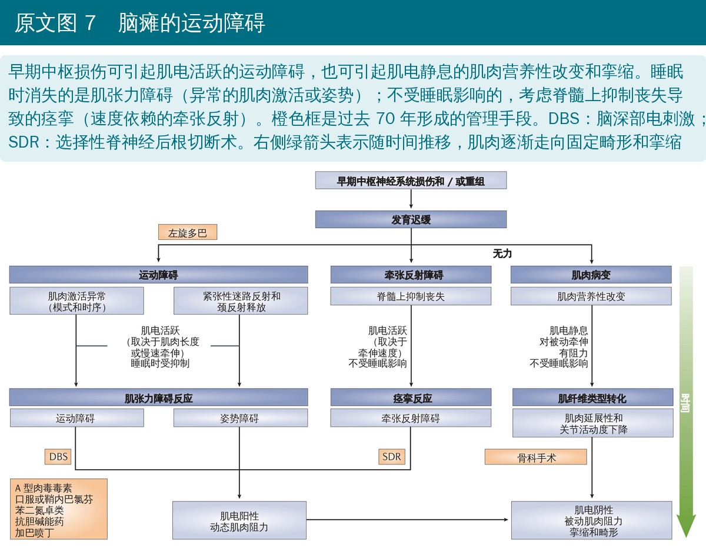
🔖原文图 7（编者把图中英文译成中文）
• 过去主要靠临床：运动里程碑延迟、肌张力和反射改变；现在美国神经病学会建议尽可能用影像确认诊断
• 全身运动评估：观察婴儿 5～20 分钟的自发运动并评定质量
• 高危婴儿：全身运动评估加头颅超声，条件允许再加 MRI，诊断的敏感度和特异度都很高
• MRI 正常的 11%～17% 要仔细排查遗传和代谢病
• 很多患儿没有已知危险因素，所以所有婴幼儿都要筛查运动发育：坐、站、走延迟，过早出现利手，爬行或走路不对称，肌张力异常
• 步态分析：用三维运动捕捉、测力台和肌电分析，支撑相分为初始着地、承重反应、支撑中期、支撑末期和摆动前期（图 8）；肌肉僵硬和短缩在生物力学上等效，只能靠查体区分
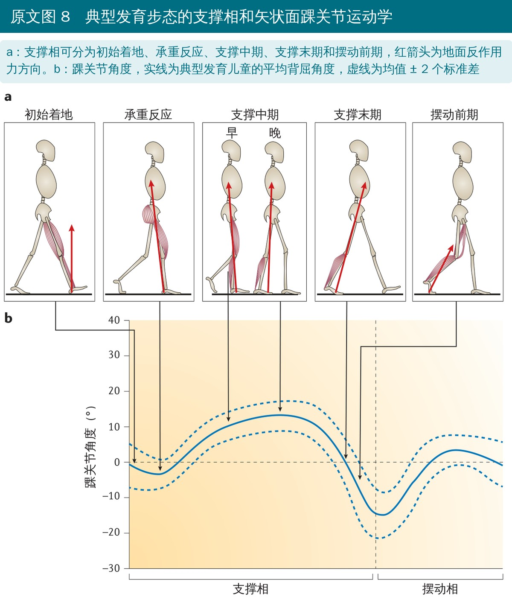
🔖原文图 8（编者把图中英文译成中文）
• 硫酸镁：早产风险孕妇使用，脑瘫减少约 30%
• 产前激素：孕 34 周前使用有效
• 全身低温：出生 6 小时内开始，降低死亡和神经残疾的严重程度
• 宫颈环扎、宫缩抑制剂减少早产；Rh 免疫球蛋白、补碘、治疗黄疸可预防特定类型
• 多种因素沿因果链叠加时（如隐瞒怀孕、吸烟、吸毒、营养差、院外早产），一级预防很难，二级预防可能更有效
• 传统思路是把张力“正常化”、促进“正常”运动模式；现代做法更关注肌无力
• 有效的两类干预：任务特异性技能训练（如强制性运动疗法），以及针对无力、体能差等继发损害的体能训练
• 有效训练的原则：患者身心都主动参与、强度足够、练习任务特异但有变化、难度逐步增加；被动手法或外骨骼带动、机械重复的效果较差
• 证据最一致：单侧脑瘫的高强度上肢训练改善手功能；下肢任务训练的效果不如上肢一致，减重跑台和机器人训练也不优于同等强度的运动训练
• Bobath、Vojta 等传统方法缺乏证据支持，却仍很普遍，尤其在发展中国家
• 肌力训练：功能性或全腿肌力训练效果差，强肌会越练越强；应针对性加强最限制任务的弱肌（抗阻训练或功能性电刺激），而不是用矫形器、肉毒毒素或延长术削弱强肌
• 力量和体能锻炼应该成为健康生活方式的一部分；水中运动对轻重度患者都有益
• 挛缩：肌腱单位很少“缩短”，而是跟不上长骨生长；瑞典随访显示痉挛到 4 岁达高峰，之后逐年下降，而关节活动度从 2 岁到 14 岁持续下降
• 降张力（口服药、肉毒毒素、鞘内巴氯芬）对固定挛缩的进展影响很小，手术可以推迟但不能避免；肉毒毒素还会导致肌力下降、肌肉和骨萎缩
• 双关节肌更容易挛缩，所以查踝背屈要分别在屈膝和伸膝时测量；骨科手术很少在 6 岁前进行
• 骨扭转：GMFCS III～V 级股骨前倾平均 40°（正常 15°～20°），是胎儿期前倾没有重塑，不是痉挛造成；单次多平面手术（6～12 岁）改善步态
• 髋关节移位：总体约 1/3，GMFCS V 级可达 90%；风险与 GMFCS 级别线性相关，与运动障碍类型无关，低张力儿童风险相同；所以要做人群髋关节监测，而不是只治内收肌
• 重度脊柱侧凸只见于 GMFCS IV、V 级，支具耐受差，肉毒毒素无效，证据支持 T2 至骨盆的长节段融合
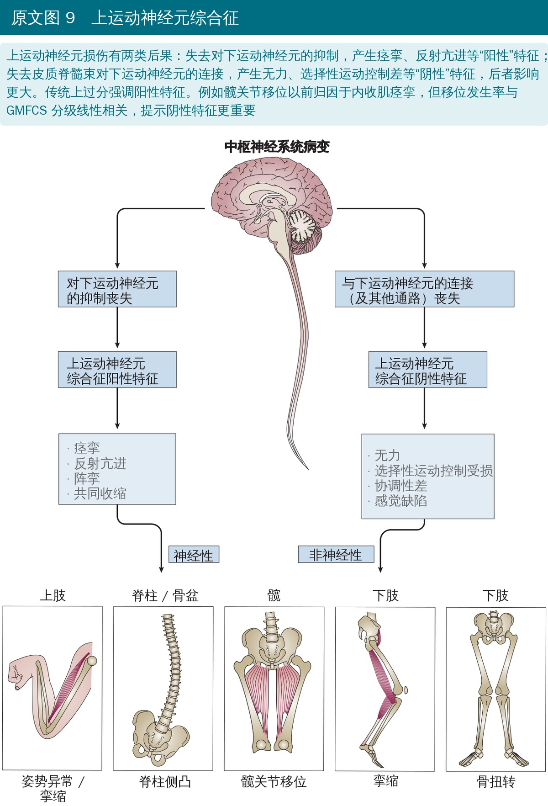
🔖原文图 9（编者把图中英文译成中文）
• 踝足矫形器：改善矢状面步态，比如纠正膝过伸或蹲伏步态；能改善冠状面畸形，但对旋转畸形无效（图 10）
• 交流和移动辅具（眼动追踪、语音输出设备、电动轮椅）越早提供，社交结局越好
• 机器人步态训练（如 Lokomat）可改善步速和 GMFM 的 D、E 区评分，踝关节机器人可增加活动度，但都缺少对照和随机
• 虚拟现实能提高参与度，但没有优于常规治疗
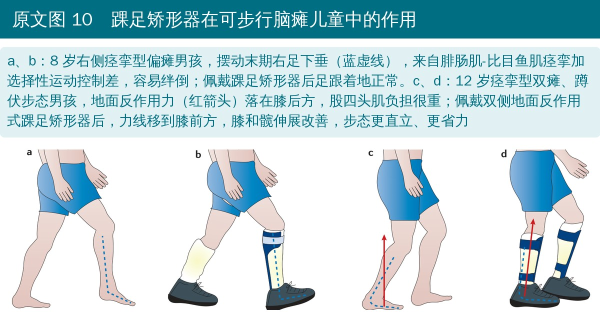
🔖原文图 10
• 约 40% 有癫痫，运动障碍越重越常见
• 口腔运动障碍导致营养不良和误吸，胃造瘘可改善营养和生活质量；胃食管反流常见
• 呼吸系统并发症是重要的致病和死亡原因；病理性骨折后需治疗骨质疏松；流涎可通过言语治疗、药物、肉毒毒素或手术改善
• 8～17 岁脑瘫儿童和青少年在 KIDSCREEN 九个领域的生活质量与同龄人相当，但参与度明显下降，下降幅度与残疾严重程度和数量成正比（图 11）
• 青少年的社会支持与同伴领域明显偏低；家长代评往往更低，可能受自身压力影响
• 疼痛与生活质量和参与度下降密切相关，各年龄段都比一般人群常见；被动牵伸是最常引起疼痛的日常活动，却对挛缩和功能没有临床意义的改善
• 成年后社交和就业不利，疲劳、疼痛和抑郁常见；从儿科向成人医疗过渡阶段的结局不好
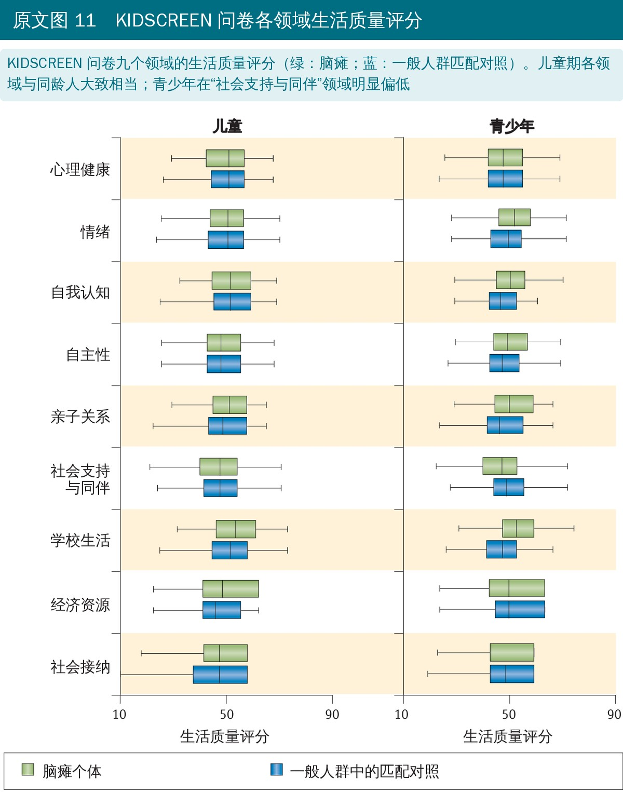
🔖原文图 11（编者把图中英文译成中文）
• 过去 30 年，MRI、肉毒毒素、鞘内巴氯芬、抗癫痫药、胃造瘘和辅助技术大大改善了脑瘫患者的生活
• 预防比治愈更现实：硫酸镁和低温治疗已经明显降低了脑瘫发生率
• 早期识别加早期高强度干预可能改善结局，针对所有早产儿的研究没看到效果，可能是没有针对高危儿
• 干细胞：动物模型效果明显，但尚无人体疗效研究发表；两项异体脐带血随机对照试验样本小、各组都有改善，难以区分发育进步和治疗效果
• 神经康复仍是核心，再配合肌张力管理、内科问题处理、必要时骨科手术，以及促进融入社会
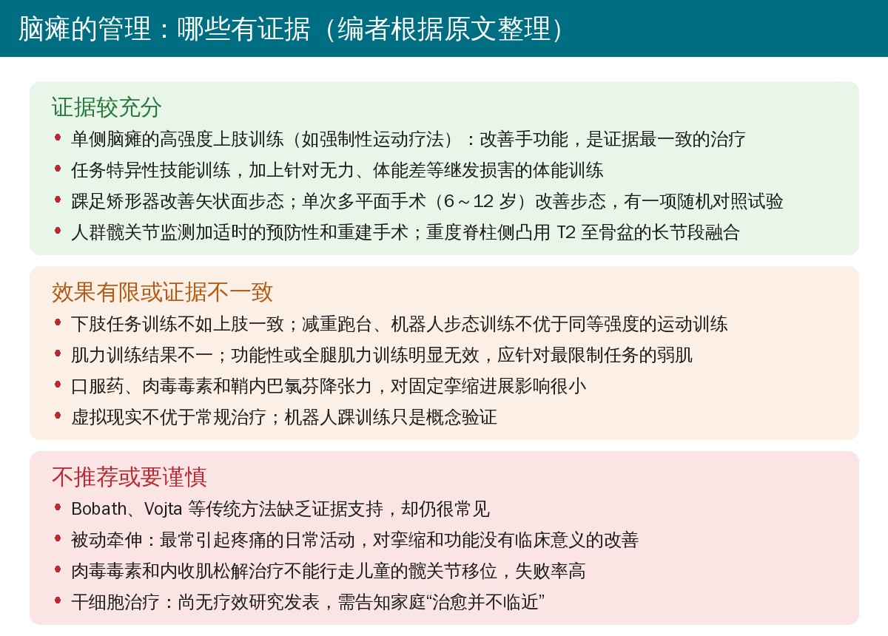
🔖编者根据原文整理
• 叙述性综述：没有系统检索和证据分级，观点的强弱主要靠作者团队的经验和所引文献；12 位作者覆盖流行病学、神经科、骨科、康复和肌肉生物学，视角比较全面
• 流行病学数据较扎实：来自澳洲、欧洲和北欧的人群登记和大样本随访，比如髋关节移位与 GMFCS 的线性关系
• 机制部分多为推测：肌节长度、卫星细胞减少约 70% 来自小样本活检，作者也指出流式分选可能受细胞外基质增多影响；图 6 中“肌节不串联增加”明确写的是“我们推测”
• 治疗证据不均衡：上肢高强度训练、硫酸镁、低温治疗证据较好；单次多平面手术只有一项随机对照试验；机器人、虚拟现实、干细胞基本是初步证据
• 时效性：发表于 2016 年。编者注：此后 2017 年发表了脑瘫早期诊断国际指南，主张对高危婴儿在矫正 6 月龄前作出诊断，阅读时需要结合新证据
• 版权：原文为 Macmillan 出版的非开放获取文章，本文仅作学术交流
• 尖足的原因前后矛盾：正文明确说“痉挛不是典型尖足姿势的原因”，图 10 图注却写图 a 的尖足“是腓肠肌-比目鱼肌痉挛加选择性运动控制差的结果”
• “发达”误为“发展中”：Durkin 综述部分写“一项研究的患病率远低于发展中国家”，比较对象应是发达国家（高收入国家），否则逻辑不通
• “contracture”应为“contraction”：髋关节部分说正常髋发育依赖髋外展肌的“phasic contracture”（时相性挛缩），按语义应是时相性收缩
• “正常 MRI”的说法易误读：运动障碍型脑瘫“50% 神经影像正常”和全体脑瘫“11%～17% MRI 正常”出现在同一段，前者口径远高于后者，原文没有说明两者的来源人群差异
• 笔误：图 7 中“Contracture amd deformity”（应为 and）；图 11 图注“Quality-of-live”（应为 life）；干细胞部分“varied considerable”（应为 considerably）
• 分清痉挛和肌张力障碍：看睡眠时是否消失、是否速度依赖；肌张力障碍常被漏诊，治疗思路不同
• 别把降张力当目标：降痉挛不一定改善功能，尖足也不一定是痉挛造成的；评估重点放在无力和选择性运动控制
• 练弱肌：找出最限制任务的那块弱肌做针对性抗阻或功能性电刺激，避免全腿练、强肌越练越强
• 训练要“够量、主动、有变化”：单侧脑瘫的高强度上肢训练证据最好；被动手法和机械重复效果差
• 少用被动牵伸：它是最常引起疼痛的日常活动，却对挛缩和功能没有临床意义的改善
• 按 GMFCS 做髋关节监测：GMFCS 越高风险越大，定期拍片监测迁移百分比，适时转骨科
• 高危婴儿早识别：全身运动评估加头颅超声 / MRI，尽早转介早期干预
• 想到成年：青春期起把力量和体能训练变成生活习惯，关注疼痛、疲劳和向成人医疗的过渡
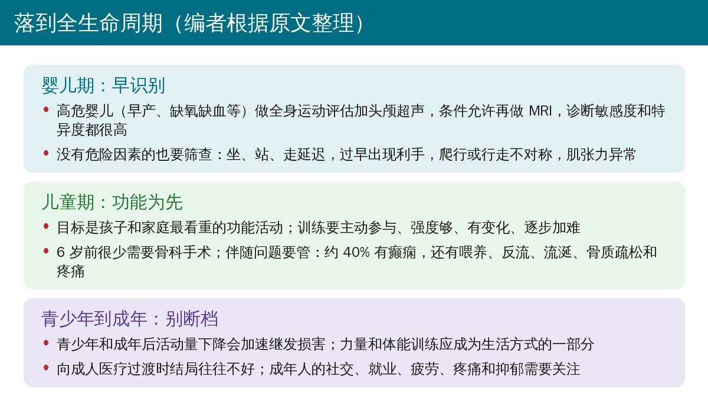
🔖编者根据原文整理
原文没有表格。为方便查阅，编者把文中涉及的主要分型和术语整理如下。
附表 脑瘫常用分型和术语（编者根据原文整理）
| 维度 | 类别 | 要点 |
|---|---|---|
| 粗大运动功能（GMFCS） | I～V 级 | I 级不用扶栏杆上楼、能跑跳；II 级上楼需扶栏杆；III 级借手持助行器行走；IV 级多需他人协助或电动移动；V 级所有环境都靠他人推轮椅 |
| 部位 | 单侧：单瘫、偏瘫；双侧：双瘫、三肢瘫、四肢瘫 | 按 SCPE 术语，四肢瘫也称“全身受累” |
| 运动障碍 | 痉挛型、运动障碍型、共济失调型 | 运动障碍型（肌张力障碍、舞蹈手足徐动）占 6%～14%；共济失调型最少见 |
| 上运动神经元综合征 | 阳性特征 / 阴性特征 | 阳性：痉挛、反射亢进、阵挛、共同收缩；阴性：无力、选择性运动控制受损、协调差、感觉缺陷 |
| 痉挛 vs 肌张力障碍 | 睡眠时消失：肌张力障碍；不受睡眠影响：痉挛 | 痉挛为速度依赖的牵张反射亢进（Lance 定义） |
| 挛缩 | 动态 / 固定 | 动态：麻醉下长度正常，非手术治疗；固定：麻醉下仍存在，可能需手术延长 |
| 髋关节移位 | 迁移百分比 > 30% | 正常 < 10%；总体约 1/3，GMFCS V 级可达 90% |
注：GMFCS，粗大运动功能分级系统；SCPE，欧洲脑瘫监测协作组；GMFM，粗大运动功能测量。
欢迎关注悦美力公众号，获取更多物理治疗的专业知识！
📄参考文献：
Graham HK, Rosenbaum P, Paneth N, Dan B, Lin JP, Damiano DL, Becher JG, Gaebler-Spira D, Colver A, Reddihough DS, Crompton KE, Lieber RL. Cerebral palsy. Nat Rev Dis Primers. 2016;2:15082. doi:10.1038/nrdp.2015.82
本文为中文解读，仅作学术交流：图片引自原文图 1～图 11（编者把图中英文译成中文覆盖原文位置），关键数字卡、管理证据卡和全生命周期卡为编者根据原文整理。原文 © 2016 Macmillan Publishers Limited，版权归原出版方所有。